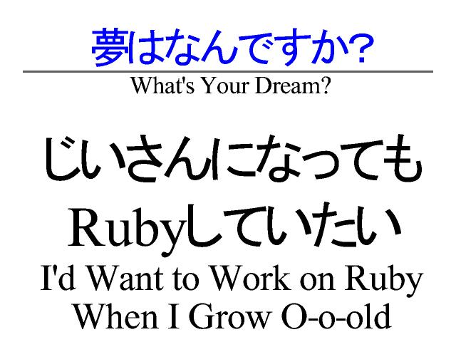

I Guess Matz Will Not Be Retiring
June
15th
12:24
I can’t seem to find the article, but it seems like someone who took notes at the LLRing last year mentioned that Matz was hoping to gradually step out of Ruby development. The article was surely a poor translation, though. Check this slide from Matz’ keynote at RubyKaigi:

Matz is like the anti-Jobs. He tears Ruby a new one! I wonder if self-deprecation is how you get psyched in Japan.
Now begin the comments …
Comments are closed for this entry.